Repères de la famille
Trente et une armes de poing : vingt-six revolvers au sens du jeu, cinq pistolets au sens strict, douze calibres et un poids total qui va de 85 grammes pour le pistolet en plastique 20 x 1 mm à 3,3 kilos pour le lance-grenades M32A1. Ce sont les armes de secours du jeu, et l’export en décrit la logique : distance efficace de 50 à 70 mètres, cadence le plus souvent limitée à 30 coups par minute.
Trois exceptions méritent d’être signalées, parce qu’elles font partie du catalogue et qu’il serait malhonnête de les taire : le Glock 18C est la seule arme de la famille à accepter le tir automatique, à 1 200 coups par minute ; le Stechkin APS et l’APB acceptent l’automatique à 750 coups par minute ; et le jeu classe le fusil MTs-255-12 en 12 gauges et le lance-grenades M32A1 dans la catégorie « revolver », ce qui explique leur présence dans cette page.
30 à 100
Ergonomie. L’amplitude la plus large du catalogue avec les armes de mêlée : le pistolet en plastique 20 x 1 mm culmine à 100, le Chiappa Rhino 200DS à 95, le Glock 19X et le Lebedev PL-15 à 93. Le M32A1 ferme la marche à 30.
238 à 553
Recul vertical. Le M32A1 affiche le plus faible de la famille à 238, le Five-seveN MK2 à 281, et le TT-33 le plus fort à 553, avec sa version dorée identique.
12
Calibres. Du 9 x 18 mm PM au 12,7 x 33 mm, en passant par le .357 Magnum, le 9 x 21 mm et le 7,62 x 25 mm TT : c’est la plus large palette de calibres du catalogue, et la principale contrainte de cette famille.
Une famille qui décide de la munition de secours. Douze calibres différents, dont certains ne comptent que deux ou trois cartouches dans le catalogue des munitions. Choisir une arme de poing, c’est d’abord choisir le calibre que l’on acceptera de transporter en réserve — et celui que l’on trouvera en magasin.
Le catalogue de la famille
Les trente et une armes de poing de l’export, avec leurs mesures à configuration de base.
| Image | Arme | Calibre | Ergonomie | Recul vertical | Recul horizontal | Cadence (c/min) | Distance efficace (m) | Modes de tir | Munitions | Presets |
|---|---|---|---|---|---|---|---|---|---|---|
 | Pistolet Beretta M9A3 9 x 19 mm | 9 x 19 mm Para | 70 | 404 | 280 | 30 | 50 | Semi-automatique | 9 | 1 |
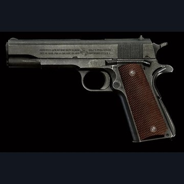 | Pistolet Colt M1911A1 .45 ACP | 11,43 x 23 mm ACP | 75 | 451 | 355 | 30 | 50 | Semi-automatique | 5 | 1 |
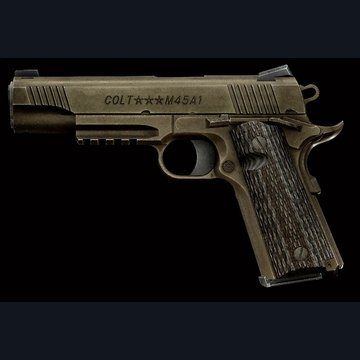 | Pistolet Colt M45A1 .45 ACP | 11,43 x 23 mm ACP | 78 | 438 | 325 | 30 | 50 | Semi-automatique | 5 | 2 |
 | Pistolet FN Five-seveN MK2 5,7 x 28 mm | 5,7 x 28 mm | 86 | 281 | 240 | 30 | 50 | Semi-automatique | 7 | 1 |
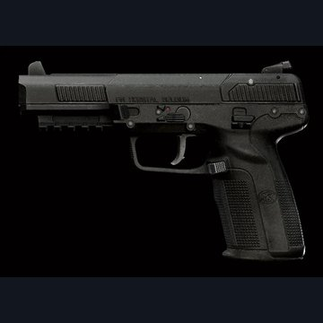 | Pistolet FN Five-seveN MK2 5,7 x 28 mm (FDE) | 5,7 x 28 mm | 86 | 281 | 240 | 30 | 50 | Semi-automatique | 7 | 2 |
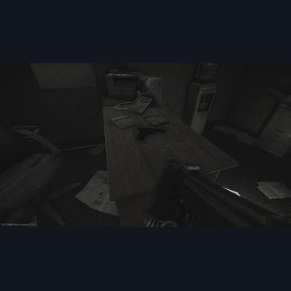 | Pistolet Glock 17 9 x 19 mm | 9 x 19 mm Para | 90 | 311 | 260 | 30 | 50 | Semi-automatique | 9 | 10 |
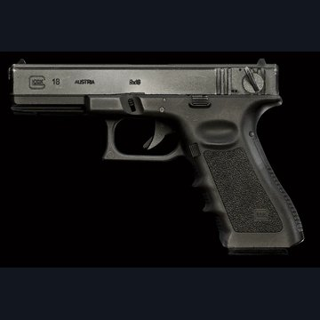 | Pistolet Glock 18C 9 x 19 mm | 9 x 19 mm Para | 90 | 306 | 286 | 1200 | 50 | Semi-automatique, Automatique | 9 | 2 |
 | Pistolet Glock 19X 9 x 19 mm | 9 x 19 mm Para | 93 | 302 | 250 | 30 | 50 | Semi-automatique | 9 | 1 |
 | Pistolet HK USP .45 ACP | 11,43 x 23 mm ACP | 82 | 410 | 295 | 30 | 50 | Semi-automatique | 5 | 5 |
 | Pistolet Lebedev PL-15 9 x 19 mm | 9 x 19 mm Para | 93 | 289 | 235 | 30 | 50 | Semi-automatique | 9 | 1 |
 | Pistolet Magnum Research Desert Eagle L5 .357 Magnum | 9 x 33 mm R | 68 | 455 | 320 | 30 | 50 | Semi-automatique | 4 | 1 |
 | Pistolet Magnum Research Desert Eagle L5 .50 AE | 12,7 x 33 mm | 68 | 465 | 330 | 30 | 50 | Semi-automatique | 5 | 1 |
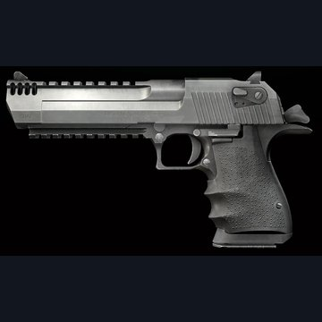 | Pistolet Magnum Research Desert Eagle L6 .50 AE | 12,7 x 33 mm | 64 | 465 | 330 | 30 | 50 | Semi-automatique | 5 | 1 |
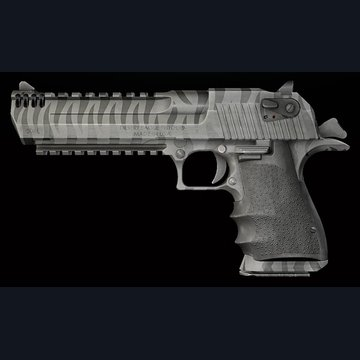 | Pistolet Magnum Research Desert Eagle L6 .50 AE (WTS) | 12,7 x 33 mm | 64 | 465 | 330 | 30 | 50 | Semi-automatique | 5 | 1 |
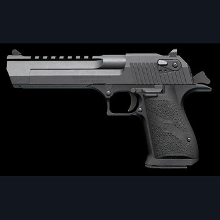 | Pistolet Magnum Research Desert Eagle Mk XIX .50 AE | 12,7 x 33 mm | 64 | 465 | 330 | 30 | 50 | Semi-automatique | 5 | 1 |
 | Pistolet Makarov PM (f) 9 x 18 mm PM | 9 x 18 mm PM | 84 | 380 | 265 | 30 | 50 | Semi-automatique | 14 | 1 |
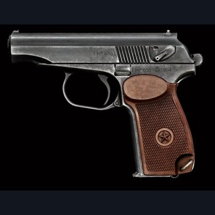 | Pistolet Makarov PM 9 x 18 mm PM | 9 x 18 mm PM | 85 | 380 | 265 | 30 | 50 | Semi-automatique | 14 | 1 |
 | Pistolet SIG P226R 9 x 19 mm | 9 x 19 mm Para | 80 | 383 | 275 | 30 | 50 | Semi-automatique | 9 | 2 |
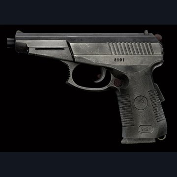 | Pistolet Serdyukov SR-1MP Gyurza 9 x 21 mm | 9 x 21 mm | 82 | 442 | 325 | 30 | 50 | Semi-automatique | 6 | 3 |
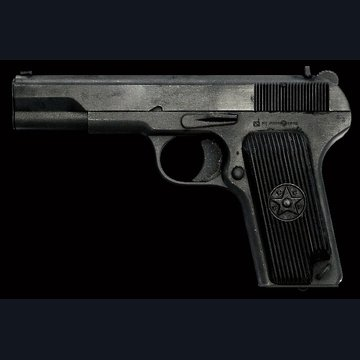 | Pistolet TT-33 7,62 x 25 mm | 7,62 x 25 mm TT | 70 | 553 | 325 | 30 | 50 | Semi-automatique | 10 | 2 |
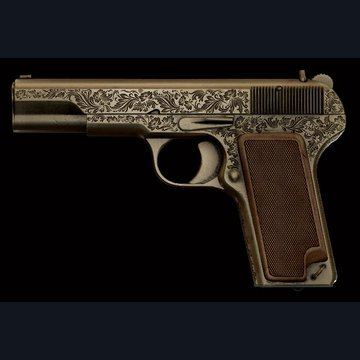 | Pistolet TT-33 7,62 x 25 mm (doré) | 7,62 x 25 mm TT | 70 | 553 | 325 | 30 | 50 | Semi-automatique | 10 | 1 |
 | Pistolet Yarygin MP-443 "Grach" 9 x 19 mm | 9 x 19 mm Para | 75 | 425 | 310 | 30 | 50 | Semi-automatique | 9 | 1 |
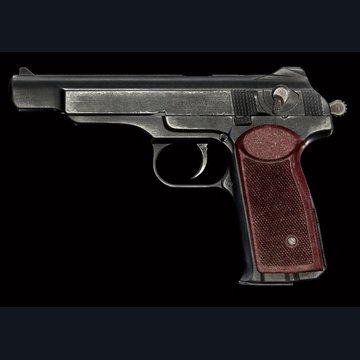 | Pistolet automatique Stechkin APS 9 x 18 mm PM | 9 x 18 mm PM | 70 | 328 | 260 | 750 | 50 | Semi-automatique, Automatique | 14 | 1 |
 | Pistolet automatique silencé APB 9 x 18 mm PM | 9 x 18 mm PM | 80 | 328 | 260 | 750 | 50 | Semi-automatique, Automatique | 14 | 1 |
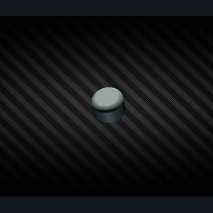 | Pistolet en plastique 20 x 1 mm | 20 x 1 mm | 100 | 380 | 265 | 30 | 50 | Semi-automatique | 1 | 1 |
 | Pistolet silencé PB 9 x 18 mm PM | 9 x 18 mm PM | 80 | 380 | 260 | 30 | 50 | Semi-automatique | 14 | 1 |
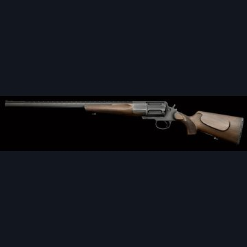 | Fusil MTs-255-12 calibre 12 | 12 gauges | 50 | 364 | 486 | 30 | 70 | Semi-automatique, doubleaction | 17 | 1 |
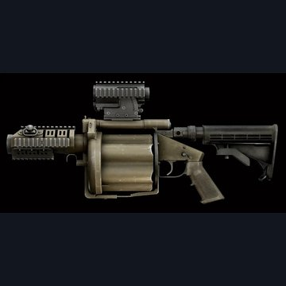 | Lance-grenades M32A1 40 mm | 4,0 x 46 mm | 30 | 238 | 560 | 30 | 70 | Semi-automatique | 7 | 2 |
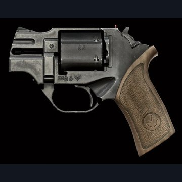 | Revolver Chiappa Rhino 200DS 9 x 19 mm | 9 x 19 mm Para | 95 | 306 | 200 | 30 | 70 | Semi-automatique, doubleaction | 9 | 1 |
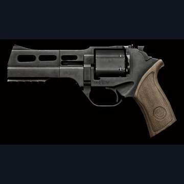 | Revolver Chiappa Rhino 50DS .357 Magnum | 9 x 33 mm R | 80 | 383 | 280 | 30 | 70 | Semi-automatique, doubleaction | 4 | 2 |
 | Revolver RSh-12 12,7 x 55 mm | 12,7 x 55 mm | 40 | 493 | 340 | 30 | 70 | Semi-automatique, doubleaction | 3 | 2 |
Plusieurs armes apparaissent en double dans l’export : le Five-seveN MK2 en version standard et FDE, le Desert Eagle L6 en version standard et WTS, le TT-33 et sa version dorée. Ce sont des objets distincts, avec des prix et des disponibilités parfois différents.
Presets publiés
Cinquante-quatre presets sont rattachés aux trente et une armes de la famille. Sur une arme de poing, le preset joue sur la crosse, le canon et le magasin : l’ergonomie progresse de quelques points, le recul baisse quand le canon s’allonge.
| Preset | Ergonomie | Recul vertical | Recul horizontal | Précision (MOA) | État |
|---|---|---|---|---|---|
| Pistolet Colt M45A1 .45 ACP Mew-mewPistolet Colt M45A1 .45 ACP | 91 | 431 | 320 | 10.32 | preset publié |
| Pistolet FN Five-seveN MK2 5,7 x 28 mm (FDE) MirePistolet FN Five-seveN MK2 5,7 x 28 mm (FDE) | 88 | 274 | 234 | 8.25 | preset publié |
| Pistolet Glock 17 9 x 19 mm Alpha WolfPistolet Glock 17 9 x 19 mm | 87 | 262 | 219 | 10.32 | preset publié |
| Pistolet Glock 17 9 x 19 mm FischerPistolet Glock 17 9 x 19 mm | 91 | 255 | 213 | 11.69 | preset publié |
| Pistolet Glock 17 9 x 19 mm HexPistolet Glock 17 9 x 19 mm | 92 | 246 | 206 | 10.32 | preset publié |
| Pistolet Glock 17 9 x 19 mm JackiePistolet Glock 17 9 x 19 mm | 95.5 | 280 | 234 | 10.32 | preset publié |
| Pistolet Glock 17 9 x 19 mm PS9Pistolet Glock 17 9 x 19 mm | 86 | 293 | 245 | 11.35 | preset publié |
| Pistolet Glock 17 9 x 19 mm SpartanPistolet Glock 17 9 x 19 mm | 104 | 280 | 234 | 9.29 | preset publié |
| Pistolet Glock 17 9 x 19 mm Tac 2Pistolet Glock 17 9 x 19 mm | 73.5 | 277 | 232 | 11.35 | preset publié |
| Pistolet Glock 17 9 x 19 mm Tac 3Pistolet Glock 17 9 x 19 mm | 81 | 271 | 226 | 11.69 | preset publié |
| Pistolet Glock 17 9 x 19 mm ViperPistolet Glock 17 9 x 19 mm | 85.5 | 252 | 211 | 10.32 | preset publié |
| Pistolet Glock 18C 9 x 19 mm LizziePistolet Glock 18C 9 x 19 mm | 89.5 | 297 | 278 | 12.04 | preset publié |
| Pistolet HK USP .45 ACP ElitePistolet HK USP .45 ACP | 81 | 345 | 248 | 7.22 | preset publié |
| Pistolet HK USP .45 ACP ExpertPistolet HK USP .45 ACP | 91 | 396 | 285 | 8.94 | preset publié |
| Pistolet HK USP .45 ACP MatchPistolet HK USP .45 ACP | 78 | 341 | 245 | 7.91 | preset publié |
| Pistolet HK USP .45 ACP TacticalPistolet HK USP .45 ACP | 91 | 404 | 291 | 9.29 | preset publié |
| Pistolet SIG P226R 9 x 19 mm TacticalPistolet SIG P226R 9 x 19 mm | 72.5 | 365 | 262 | 10.32 | preset publié |
| Pistolet Serdyukov SR-1MP Gyurza 9 x 21 mm Tactical 1Pistolet Serdyukov SR-1MP Gyurza 9 x 21 mm | 71 | 433 | 319 | 7.57 | preset publié |
| Pistolet Serdyukov SR-1MP Gyurza 9 x 21 mm Tactical 2Pistolet Serdyukov SR-1MP Gyurza 9 x 21 mm | 71 | 433 | 319 | 7.57 | preset publié |
| Pistolet TT-33 7,62 x 25 mm BrunnerPistolet TT-33 7,62 x 25 mm | 66 | 492 | 289 | 12.04 | preset publié |
| Lance-grenades M32A1 40 mm M2A1Lance-grenades M32A1 40 mm | 26 | 173 | 406 | 16.5 | preset publié |
| Revolver Chiappa Rhino 50DS .357 Magnum TacticalRevolver Chiappa Rhino 50DS .357 Magnum | 81 | 383 | 280 | 5.16 | preset publié |
| Revolver RSh-12 12,7 x 55 mm TAC30Revolver RSh-12 12,7 x 55 mm | 38 | 483 | 333 | 6.88 | preset publié |
Acquisition et disponibilité
Trois armes de la famille sont proposées en magasin, toutes au niveau 1 de fidélité du Mécanicien : le Glock 17 à 8 260 roubles, le Makarov PM (f) à 6 897 roubles et le SIG P226R à 7 798 roubles. Ce sont les seules acquisitions garanties de la famille, et les moins chères du catalogue avec les pistolets-mitrailleurs.
| Arme | Marchands | Niveau de fidélité | Prix |
|---|---|---|---|
| Pistolet Glock 17 9 x 19 mm | Mechanic | 1 | 8 260 ₽ |
| Pistolet Makarov PM (f) 9 x 18 mm PM | Mechanic | 1 | 6 897 ₽ |
| Pistolet SIG P226R 9 x 19 mm | Mechanic | 1 | 7 798 ₽ |
Les prix relèvent de l’instantané du 18 novembre 2026 et sont exprimés en roubles. Une arme de poing achetée en magasin se revend plus cher que le même article acheté aux enchères : c’est l’un des rares arbitrages de la guide où l’achat en magasin est rentable.
Comment s’équiper
- Tenir compte de ce que l’on peut acheter. Le 9 x 19 mm Para équipe onze armes de la famille et se trouve chez les marchands ; le 9 x 18 mm PM en équipe cinq ; le 9 x 21 mm et le 12,7 x 33 mm beaucoup moins. Une arme de secours se choisit d’abord dans le catalogue des munitions, puis dans celui des armes.
- Les automatiques sont des exceptions utiles. Le Glock 18C, le Stechkin APS et l’APB acceptent l’automatique, à 1 200 et 750 coups par minute. Le Stechkin est le meilleur compromis de la famille : 70 d’ergonomie, 328 de recul et un 9 x 18 mm PM abondant en magasin.
- Le poids compte dans un raid. Le TT-33 pèse 664 grammes, le Magnum Research Desert Eagle Mk XIX 829, le M32A1 3,3 kilos. Une arme de secours est une arme qu’on porte tout le temps : au-delà d’un kilo, elle devient une arme principale.
Sources et limites
Les chiffres viennent de l’export communautaire du 18 novembre 2026, et la répartition entre arme de poing et revolver suit la catégorie du jeu, pas l’appellation commerciale des objets : c’est pourquoi le fusil MTs-255-12 et le lance-grenades M32A1 figurent dans cette page. Les avis de joueurs sur la valeur d’une arme de poignarde une fois le raid terminé sont des opinions, jamais des sources de chiffres.
- Tarkov.dev — catalogue des armes et de leurs presetsDonnées communautaires
- Tarkov.dev — items, équipement, munitions et skills (PvP ; autres modes via le catalogue)Données communautaires
- Tarkov.dev — catalogue officiel des exports JSONDonnées communautaires
- Escape from Tarkov WikiWiki communautaire
- KappaGuide — outils, cartes et guidesOutil communautaire